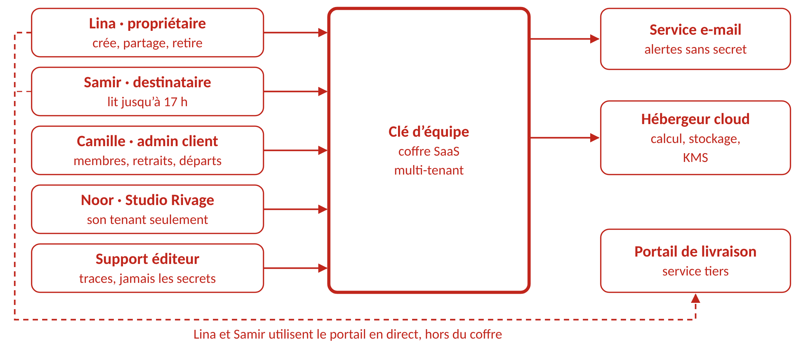
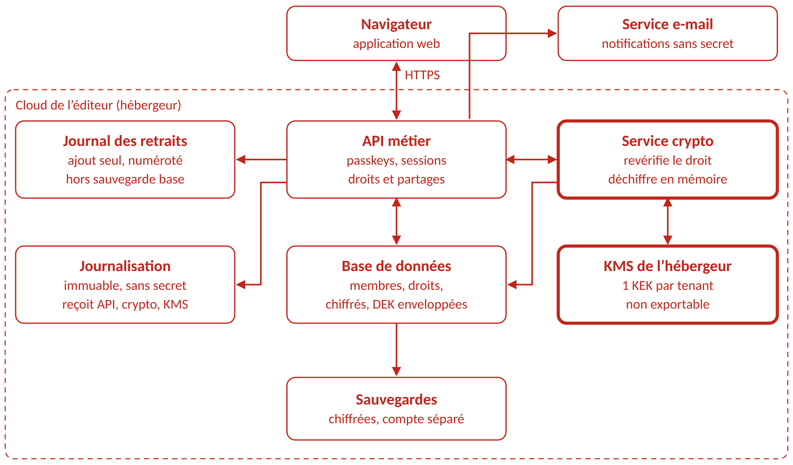
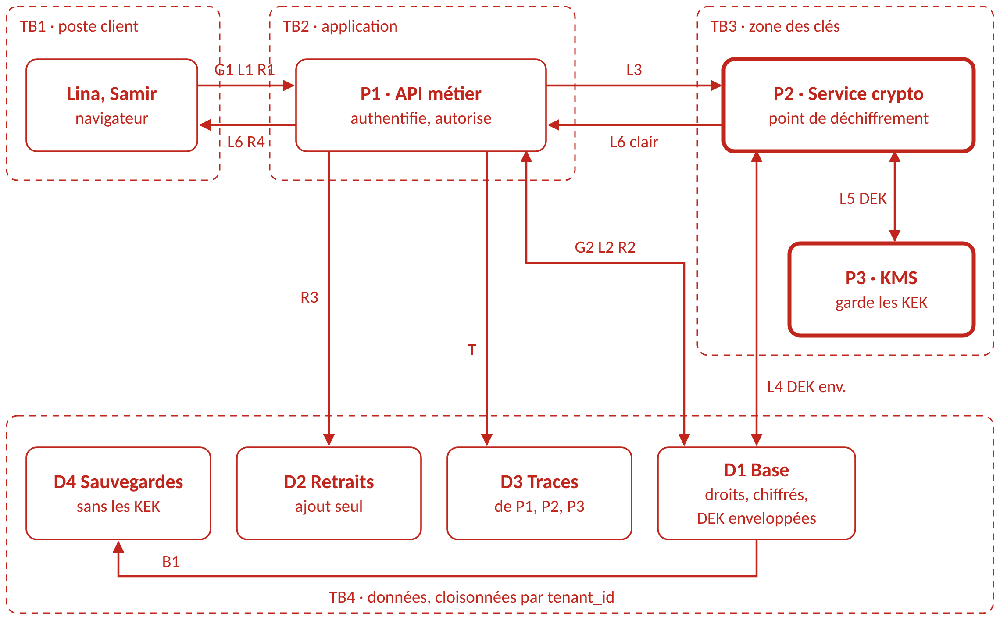

Architecture sécurisée · TP · données fictives
Clé d’équipe.
Coffre de mots de passe en SaaS. Rouge : texte de l’IA. Noir : réécrit par nous.
1. Périmètre et droits
Objet : garder des entrées (titre, identifiant, secret) dans l’espace d’un client (tenant), privées ou partagées à des personnes nommées du même tenant, avec échéance et retrait anticipé. Hors périmètre : lien public, partage entre entreprises, hors ligne.
Questions du comité : qui peut lire un secret (matrice) ; comment un accès est retiré (R-RET, R-DEP) ; comment le vérifier (T4 à T9).
| ID | Actif critique | Besoin (CIA + T) | Conséquence si perdu |
|---|---|---|---|
| A1 | Secret en clair (et identifiant, titre) | C, I | compromission du service tiers |
| A2 | Droits, partages, état des membres, retraits | I | accès illégitime ou rétabli |
| A3 | Clés : DEK, KEK | C, D | tout lisible, ou tout perdu |
| A4 | Passkeys, sessions | C, I | usurpation |
| A5 | Base et sauvegardes | D, I | service perdu, droits périmés |
| A6 | Traces | I, T | aucune preuve |
Acteurs : Lina (propriétaire, change aussi le mot de passe sur le portail), Samir (destinataire), Camille (admin Atelier Nord), Noor (Studio Rivage), support éditeur ; exploitation éditeur et hébergeur.
Matrice des droits sur l’entrée « Portail de livraison » (Atelier Nord)
| Qui | Lire le secret | Modifier | Partager | Retirer un partage | Gérer membres | Voir traces |
|---|---|---|---|---|---|---|
| Lina, propriétaire | Oui | Oui | Oui | Oui | Non | ses entrées |
| Samir, partage actif | Oui | Non | Non | Non | Non | Non |
| Samir après retrait, échéance ou départ | Non | Non | Non | Non | Non | Non |
| Autre membre Atelier Nord | Non | Non | Non | Non | Non | Non |
| Camille, admin client | Non (1) | Non | Non | Oui (2) | Oui | son tenant |
| Noor, autre tenant | Non | Non | Non | Non | Non | Non |
| Support éditeur | Non | Non | Non | Non | Non | ID seuls |
(1) sauf partage nominatif reçu de la propriétaire. (2) à partir d’une liste d’identifiants (entrée, destinataire, échéance), sans titre ni contenu. Entrée privée : seule la propriétaire. Support : identifiants, dates, résultats ; ni titre, ni secret, ni fonction de lecture.
Règles (refus par défaut)
| Règle | Énoncé |
|---|---|
| R-AUT | Connexion au coffre par passkey (WebAuthn), 2 par compte. Session serveur, cookie HttpOnly, Secure, SameSite ; protection CSRF ; fin après 15 min d’inactivité, 8 h maximum. |
| R-CRE | Membre actif ; il devient propriétaire. Tenant tiré de la session, jamais du navigateur. Privée par défaut. |
| R-LEC | Session valide ET membre actif ET tenant session = tenant entrée ET (propriétaire OU partage à son nom, non retiré, non échu à l’heure serveur). Vérifié par l’API à chaque requête, revérifié par le service crypto avant le KMS. Aucun cache de droits. Refus : 404 identique à « inexistant ». |
| R-PAR | Propriétaire seule ; destinataire actif du même tenant ; lecture seule ; échéance obligatoire (30 jours max) ; pas de repartage. |
| R-RET | Propriétaire ou admin du tenant ; effet immédiat ; numéroté et journalisé ; jamais annulé (un nouveau partage est un nouvel acte). |
| R-MEM | L’admin du tenant invite et désactive les membres ; son rôle ne donne aucun droit sur le contenu des entrées. |
| R-DEP | Désactivation : sessions détruites, partages reçus et émis retirés, ses entrées gelées. Pas de transfert par l’admin : transfert par la propriétaire avant départ, sinon secret réinitialisé sur le service tiers. |
| R-MOD | Propriétaire seule ; nouvelle version, nouvelle clé ; les partages actifs lisent la dernière version. |
| R-REC | Seconde passkey ou code de secours personnel. Sinon l’admin réactive le compte avec un coffre vide : anciennes entrées privées bloquées 30 jours puis supprimées, secrets à réinitialiser, partages vers ce compte retirés (à ré-accorder), notification. |
Échéance, départ, session ouverte : la session n’accorde aucun droit en soi ; à 17 h ou après désactivation, la requête suivante est refusée, onglet ouvert ou non. Un secret déjà affiché ou copié ne peut pas être repris (masquage après 30 s, Cache-Control: no-store).
2. Architecture et flux

Figure 1 · C4 contexte

Figure 2 · C4 conteneurs
Ajouts au point de départ : service crypto (seul à voir les clés, surface réduite) ; KMS (clés non exportables) ; journal des retraits (survit à une restauration) ; e-mail (alertes sans secret). API et service crypto : identités distinctes, mTLS, jeton de requête signé (60 s max) ; seule l’identité du service crypto peut demander au KMS de déchiffrer.
Chemin des clés : une DEK aléatoire par version d’entrée chiffre titre, identifiant et secret (AES-256-GCM ; données associées : tenant_id, entry_id, version). La DEK est enveloppée par la KEK du tenant, qui ne sort jamais du KMS. Déchiffrement : P2 uniquement. D1 et D4 ne contiennent aucune clé en clair. La liste des titres passe aussi par P2. Isolation en base : tenant_id sur chaque ligne et sécurité au niveau des lignes.
Flux du DFD (figure 3)
| Flux | Contenu | Contrôle à la frontière |
|---|---|---|
| G1, G2 | demande de partage ; droit écrit en D1 | session, CSRF, R-PAR, même tenant |
| L1, L2 | demande de lecture ; droits, état lus en D1 | TB1→TB2 : HTTPS, R-LEC |
| L3 | API → crypto : entrée, acteur, jeton signé | TB2→TB3 : mTLS, identité de l’API |
| L4, L5 | chiffré + DEK enveloppée ; KMS rend la DEK | R-LEC revérifié ; KEK du tenant |
| L6 | secret en clair : crypto → API → navigateur | en mémoire seulement, ni cache ni journal |
| R1 à R4 | demande ; R2 retrait en D1 ; R3 copie en D2 ; R4 accusé | accusé seulement si D1 et D2 écrits |
| T | événements de P1, P2, P3 vers D3 | liste de champs autorisés |
| B1 | copie de D1 vers D4 | chiffrée, compte séparé, sans KEK |

Figure 3 · DFD ciblé : octroi G, lecture L, retrait R, traces T, sauvegarde B
3. Retrait, reprise et traces
Trois actions distinctes
| Action | Qui | Effet |
|---|---|---|
| Retirer dans le coffre | Lina ou Camille | plus aucune lecture par le coffre ; mot de passe inchangé |
| Changer le mot de passe sur le portail et fermer ses sessions | Lina | la copie de Samir ne sert plus |
| Mettre à jour l’entrée | Lina | les destinataires restants lisent le nouveau secret |
Si Samir a consulté le secret : rotation puis mise à jour sous 1 h. Délai mesurable : 5 s maximum entre le clic et le dernier secret servi (100 % des essais) ; toute lecture commencée après l’accusé est refusée ; une lecture est coupée après 3 s. Échec d’écriture : affiché comme échec. D2 indisponible : retrait « non confirmé » et lectures partagées suspendues. D1 indisponible : aucune lecture. Hypothèses : RPO 1 h, RTO 4 h.
Incident
| Heure | Événement | Garantie et limite |
|---|---|---|
| 10:00 | Lina partage à Samir jusqu’à 17 h | droit nominatif, lecture seule |
| 11:00 | sauvegarde | contient le partage actif |
| 12:10 | Samir lit | autorisé et tracé ; copie possible |
| 12:15 | Lina retire | refus en 5 s max ; onglet : texte déjà affiché non repris |
| avant 13:15 | rotation sur le portail, puis mise à jour | ancienne copie inutile |
| 14:00 | restauration de 11:00 | le partage réapparaît dans la base : reprise fermée |
| réouverture | retraits rejoués et contrôlés | Samir refusé ; entrée « à confirmer » |
| 17:00 | échéance initiale | sans effet : déjà retiré |
Reprise par l’éditeur (service fermé par défaut)
- Fermer : indicateur hors base, déchiffrement KMS désactivé, sessions invalidées.
- Restaurer dans un environnement isolé.
- Rejouer D2 à partir de 15 min avant la sauvegarde : retraits, désactivations, suppressions, passkeys et rôles ôtés, changements de version. Uniquement des réductions de droits.
- Masquer les entrées modifiées depuis la sauvegarde jusqu’à confirmation par la propriétaire (ancien secret possible).
- Vérifier la continuité des numéros de D2 jusqu’au dernier numéro ancré dans D3.
- Simuler la décision d’accès sans déchiffrer : Samir = REFUS (retiré).
- Validation à deux, réouverture, puis essai réel de Samir : refusé.
Numéro manquant : rester fermé, ou rouvrir avec tous les partages suspendus et reconfirmation des membres. Écart constaté : la sauvegarde de 11:00 restaurée à 14:00 perd 3 h, au-delà du RPO : prévoir sauvegarde horaire ou restauration à un instant donné (PITR).
Traces observables (exemples fictifs)
10:00:00 SHARE_CREATED tenant=NORD actor=u-lina entry=e-17 grant=g-42 to=u-samir exp=17:00
12:10:03 SECRET_READ_ALLOWED tenant=NORD actor=u-samir entry=e-17 grant=g-42 corr=c-901
12:15:00 SHARE_REVOKED tenant=NORD actor=u-lina grant=g-42 seq=1187 corr=c-915
12:16:12 SECRET_READ_DENIED tenant=NORD actor=u-samir entry=e-17 reason=REVOKED corr=c-922
14:40:00 RESTORE_RECONCILED source=11:00 last_seq=1187 gap=0 approvers=2
| Point | Choix |
|---|---|
| Événements | connexion, création, partage, lecture autorisée ou refusée, retrait, départ, récupération, rotation, appel KMS, restauration, changement de droits d’exploitation |
| Jamais tracé | secret, titre, identifiant, cookie, jeton, clé |
| Consultation | propriétaire : ses entrées ; admin : son tenant ; support : pseudonymes ; sécurité éditeur : tout, sans secret |
| Support peut établir | qui, quand, quelle entrée (ID), résultat, motif, numéro de retrait |
| Support ne peut pas | savoir le contenu, ni si le secret a été copié ou utilisé ailleurs |
| Alertes | refus répétés, volume de déchiffrement anormal, appel KMS sans lecture autorisée ; notification : acteur, heure, ID, sans lien ouvrant le coffre |
4. Risques STRIDE priorisés
Score = impact (1 à 4) × vraisemblance (1 à 4). STRIDE sert à identifier, pas à noter ; liste non exhaustive.
| RSK-01 Isolation | RSK-02 Reprise | RSK-03 Retrait | RSK-04 Droits forgés | |
|---|---|---|---|---|
| STRIDE | Information disclosure | Elevation of privilege | Elevation of privilege, Information disclosure | Tampering |
| Scénario | Noor change un identifiant et lit une entrée Nord (BOLA) | restaurer 11:00 réactive le partage de Samir | Samir lit via onglet, rejeu ou copie | partage injecté en base, ou API / crypto compromis |
| Impact | secret d’un autre client | droit retiré rétabli | portail utilisé après départ | lecture illégitime |
| I × V = score | 4 × 3 = 12 | 4 × 3 = 12 | 3 × 4 = 12 | 4 × 2 = 8 |
| Exigence | EX-01 aucun accès hors tenant ni sans droit | EX-02 aucun retrait annulé par une reprise | EX-03 refus en 5 s max ; rotation si consulté | EX-04 octroi seulement via l’API ; écart détecté sous 15 min |
| Contrôle | R-LEC dans API et crypto ; sécurité par ligne ; KEK par tenant + données associées | D2 hors sauvegarde ; reprise fermée ; contrôle de séquence ; double validation | pas de cache ; sessions détruites ; no-store ; alerte « secret consulté » | identité unique ; aucun accès humain permanent ; quotas ; rapprochement droits / SHARE_CREATED |
| Résiduel | faible : faille commune aux deux contrôles | faible : perte de D2 impose suspension | moyen : copie avant retrait, rotation non faite | moyen : crypto se fie à D1 et au jeton de l’API |
| Porteur | éditeur | éditeur | client (Lina) | éditeur |
| Tests | T2, T3, T10 | T7, T8 | T1, T4, T5, T6, T9 | T3, T11 |
Priorité : RSK-01 à 03 avant mise en service ; RSK-04 surveillé (détection plus que prévention).
5. Plan de validation (tests de conception)
| ID | Préconditions | Action | Attendu | Preuve |
|---|---|---|---|---|
| T1 | partage g-42 actif, 12:10 | Samir ouvre l’entrée ; tente de modifier | secret lu ; modification refusée | ALLOWED puis DENIED |
| T2 | Noor connectée ; même titre dans les 2 tenants | elle demande e-17, puis avec tenant_id=NORD forgé | 404 ; sa propre entrée reste lisible | DENIED ; aucun appel KMS |
| T3 | entrée privée de Lina | Camille et support : écran, API, appel crypto et KMS directs, lecture base | refus partout ; base illisible | traces API et KMS ; échantillon chiffré |
| T4 | partage échu à 17:00 | onglet ouvert, nouvelle session, requête rejouée, horloge client reculée | 4 refus | DENIED reason=EXPIRED |
| T5 | retrait manuel à 12:15 | mêmes variantes + lectures en boucle pendant le retrait | dernier succès ≤ 5 s ; rien après accusé | horodatages, seq |
| T6 | Samir désactivé, session ouverte | relecture, nouvelle connexion | sessions détruites ; refus | MEMBER_DISABLED ; DENIED |
| T7 | sauvegarde 11:00 ; retrait 12:15 | restaurer, tenter avant ouverture, rejouer, simuler, rouvrir, relire | fermé avant ; REFUS après | rapport signé ; seq=1187 |
| T8 | D2 amputé d’un numéro | lancer la reprise | réouverture bloquée | alerte écart ; état fermé |
| T9 | secret témoin unique ; partage, refus, retrait | support cherche le témoin dans traces, alertes, e-mails | 0 occurrence ; chronologie reconstituée | résultat de recherche ; export |
| T10 | deux entrées, tenants différents | échanger chiffrés et DEK en base | déchiffrement en échec | erreur d’authentification |
| T11 | accès base de test | insérer un partage sans passer par l’API | alerte sous 15 min | rapport de rapprochement |
6. ADR-001 · Lieu du déchiffrement
Statut : proposé. Contexte : les destinataires doivent relire le mot de passe tiers (chiffrement réversible, pas de hachage) ; retrait vérifiable ; support sans lecture. La connexion au coffre (passkey) est un sujet distinct : seule une clé publique est conservée.
| Critère | A · serveur + KMS | B · côté client (bout en bout) |
|---|---|---|
| Qui lit | propriétaire, destinataires ; techniquement le service crypto | propriétaire, destinataires ; l’éditeur n’a pas les clés mais sert le code web |
| Où sont les clés | KEK dans le KMS ; DEK enveloppées en base | clés privées chez les utilisateurs, protégées par un facteur à gérer |
| Partage | écrire un droit | chiffrer la DEK pour chaque destinataire ; vérifier sa clé publique |
| Retrait | central, immédiat, testable | droit serveur + nouvelle clé pour exclure vraiment |
| Récupération | identité seulement ; données intactes | clé perdue = données perdues, sauf clé de secours (nouveau pouvoir à protéger) |
| Support | limite par droits et organisation | limite cryptographique, diagnostic plus pauvre |
| Après restauration | rejouer les retraits | rejouer les retraits et les changements de clés |
| Risque majeur | compromission du service crypto | code ou clé publique substitués, poste compromis |
Décision : A. Service crypto isolé, chiffrement par enveloppe, une KEK par tenant, AES-256-GCM, KMS de l’hébergeur : mécanismes éprouvés, aucun algorithme maison.
Justification : les priorités du comité (retrait central et prouvable, partage simple, récupération sans perte) l’emportent ; B ajoute une gestion de clés dont la défaillance détruit les données ou recrée un accès de secours.
Conséquences : (+) retrait et reprise maîtrisés. (−) l’éditeur n’est pas techniquement aveugle : à inscrire au contrat ; pas d’accès humain permanent, changements IAM validés à deux et alertés ; KMS indisponible = refus ; destruction d’une KEK à double validation ; récupération : accès rétabli, jamais les entrées privées pour l’admin.
Validation : T2, T3, T7, T9, T10. Risque résiduel : éditeur ou service crypto compromis lit les secrets des tenants sollicités. À revoir : si un client exige un éditeur techniquement incapable de lire, ou après incident sur le service crypto.
7. Responsabilités
| Action critique | Client | Éditeur | Hébergeur | Vérifie |
|---|---|---|---|---|
| Retirer un partage | Lina ou Camille | applique, prouve | — | Lina : accusé ; Camille : trace |
| Départ d’un membre | Camille désactive | coupe sessions et partages | — | Lina : partages coupés |
| Changer le mot de passe tiers | Lina | alerte « consulté » | — | Camille sous 1 h |
| Mettre à jour l’entrée | Lina | nouvelle version | — | destinataire restant |
| Droits IAM et KMS | — | demande, approuve à deux | fournit IAM, audit | sécurité éditeur |
| Disponibilité KMS et stockage | — | supervise | assure (SLA) | exploitation éditeur |
| Sauvegarde, restauration | — | exécute, teste | stockage | second opérateur |
| Réouverture | informé ; confirme entrées | responsable, validation à 2 | — | sécurité éditeur |
| Surveillance, alertes | suit son tenant | traite 24/7 (hypothèse) | signale ses incidents | sécurité éditeur |
Risques résiduels acceptés ou à suivre
| Risque | Porteur | Suivi |
|---|---|---|
| Samir garde une copie tant que le mot de passe tiers est inchangé | Lina | rotation sous 1 h |
| Éditeur ou service crypto compromis | éditeur | alertes KMS, revue des droits |
| Poste d’un utilisateur compromis | client | hygiène du poste |
| Entrée orpheline après départ | client | transfert avant départ |
| Procédure de reprise jamais jouée | éditeur | T7 et T8 à chaque trimestre |
Preuve exigée avant réouverture : rapport de rapprochement D2 / base sans écart, signé par deux personnes, et refus simulé du partage de Samir (T7).
Sources
Cours « Concevoir et expliquer une architecture logicielle sécurisée », chap. 3 à 12, 15, 16 (cours.remoteworks.tech) ; OWASP Authorization Cheat Sheet ; OWASP Cryptographic Storage Cheat Sheet. Valeurs chiffrées (durées, seuils, RPO, RTO) : hypothèses de conception.